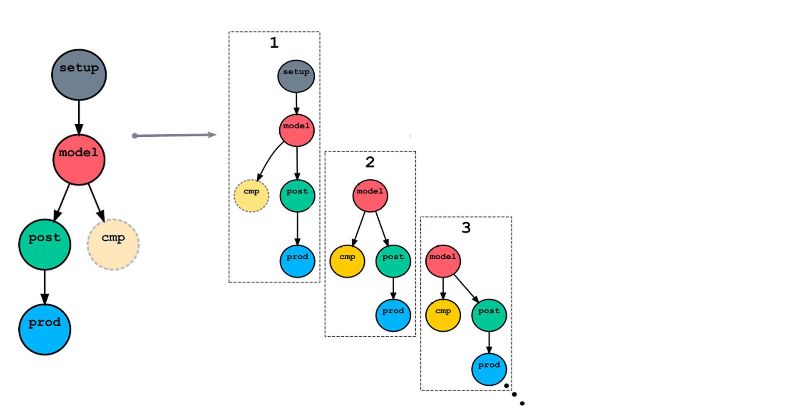
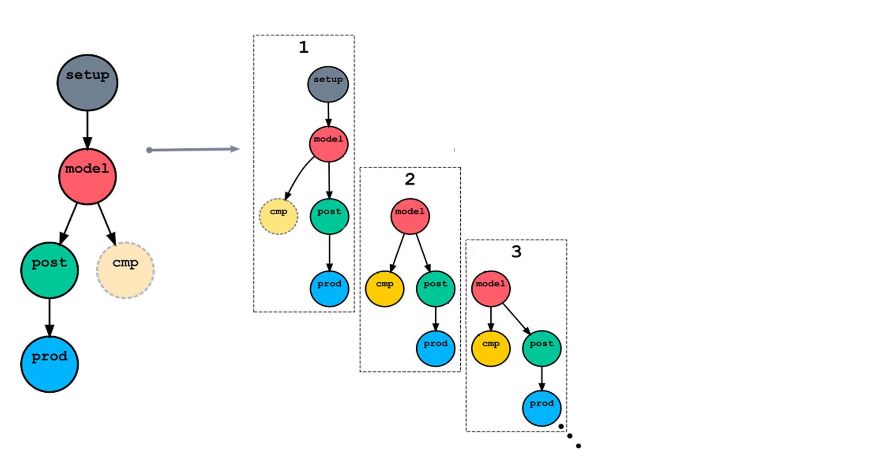

[scheduling]
[[graph]]
R1 = """
a => b & c
c => d
"""
[runtime]
[[a]]
script = "run-a.py arg1 arg2"
# ...
[scheduling]
cycling mode = integer
initial cycle point = 1
[[graph]]
R/^/P1 = """
a => b & c
c => d
a[-P1] => a # (inter-cycle)
c[-P1] => b # (ditto)
"""
[runtime]
[[a]]
script = "run-a.py arg1 arg2"
# ...
Prog
ram s caling
Is Python Slow?
# Compute intersection of two 100K sets (1/4)
foo = set(range( 1, 100000))
bar = set(range(99000, 199000))
baz = set() # <----
for i in foo:
for j in bar:
if i == j:
baz.add(i)
break
drugs-and-money$ time ./intersect-1.py
10m11.241s # <---- 10 minutes ARGH!
# Compute intersection of two 100K sets (2/4)
foo = set(range( 1, 100000))
bar = set(range(99000, 199000))
baz = foo.intersection(bar) # <----
drugs-and-money$ time ./intersect-2.py
0m 0.032s # <---- 19,000 x speedup
(repeat runs vary by several sec/100)
# Compute intersection of two 100K sets (3/4)
foo = set(range( 1, 100000))
bar = set(range(99000, 199000))
baz = {i for i in foo if i in bar} # <----
drugs-and-money$ time ./intersect-3.py
0m 0.045s # <---- 14,000 x speedup
(repeat runs vary by several sec/100)
# Compute intersection of two 100K sets (4/4)
foo = set(range( 1, 100000))
bar = set(range(99000, 199000))
baz = set() # <----
for i in foo:
if i in bar:
baz.add(i)
drugs-and-money$ time ./intersect-4.py
0m 0.056s # <---- 11,000 x speedup
def fibonacci(n):
"""Compute the n-th Fibonacci number."""
if n < 2:
return n
return fibonacci(n-1) + fibonacci(n-2)
# Print the first 40 Fibonacci numbers.
print([fibonacci(i) for i in range(40)])
from functools import lru_cache
@lru_cache
def fibonacci(n):
"""Compute the n-th Fibonacci number."""
if n < 2:
return n
return fibonacci(n-1) + fibonacci(n-2)
# Print the first 40 Fibonacci numbers.
print([fibonacci(i) for i in range(40)])
def task(n):
loc = compute_location(n) # compute
data = read_from_disk(loc) # IO
return compute_stuff(data) # compute
def main():
print(
[task(i) for i in range(3)])
if __name__ == "__main__":
main()
asynchronous
import asyncio
async def task(n):
loc = compute_location(n) # compute
data = await read_from_disk_async(loc) # IO
return compute_stuff(data) # compute
async def main():
print(await asyncio.gather(
*[task(i) for i in range(3)]))
if __name__ == "__main__":
asyncio.run(main())
Better Algorithms
Cylc 7: spawn-before-needed, with dependency matching


 m=10
m=10


 
